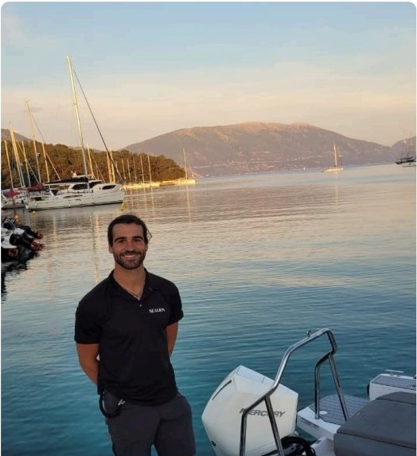
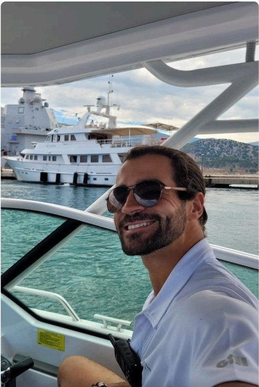
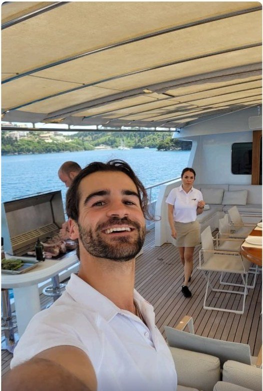
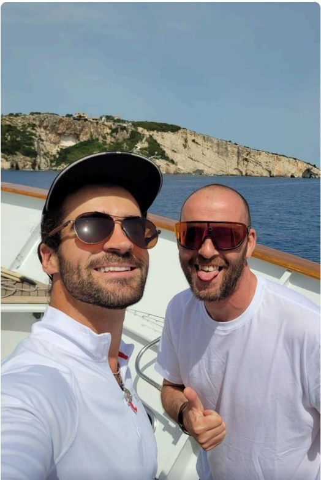
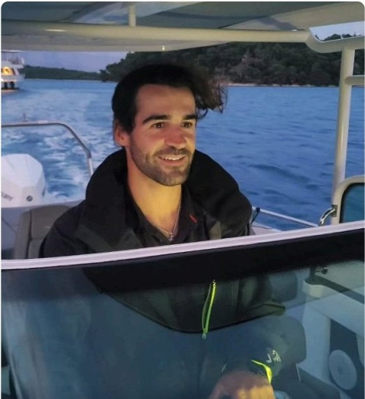
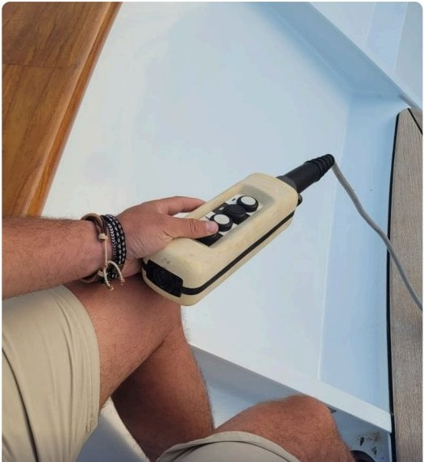
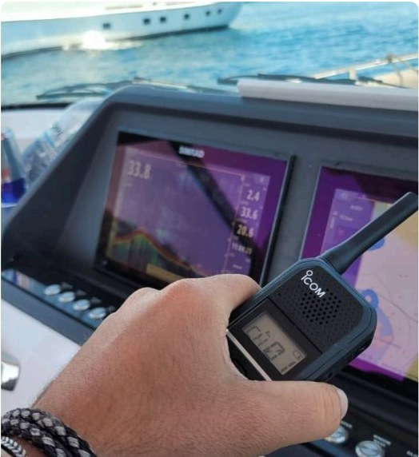
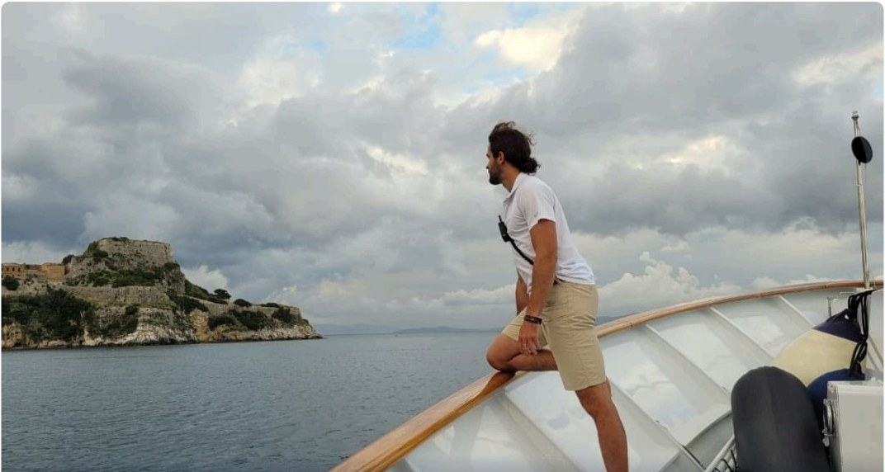

Offshore Delivery
Watch rotations, passage planning support and open-water crossings on the run from Spain to the Ionian.
Deck / Stew · Mediterranean Yacht Crew
From a South African shoreline to the helm of a chase boat in the Ionian — a 2,500 NM season built on standards, stamina and no drama.
The Profile

Deckhand experienced across motor yachts (26m–73m) and sailing yachts (18m–45m) — including four shipyard refits, a 2,500 NM Mediterranean delivery and a full Ionian charter season aboard M/Y Sealion.
Known for delivering high-standard exterior finishes, working efficiently under pressure, and integrating seamlessly into professional crew. Equally comfortable supporting the interior — housekeeping, laundry and guest-area presentation. Disciplined, physically strong and consistent, with a no-ego, high-output work ethic.
Seeking a charter-focused or private program where I can uphold exterior standards, work proactively, and grow as part of a professional crew.
The Journey
A 2,500 nautical-mile delivery passage, then back-to-back charters across the full Ionian archipelago — every anchorage run to standard.
Departure · Spain
Passage waters
Ionian landfall
Charter grounds
Island crossings
Repeat anchorages
Season's reach · Greece
Watch rotations, passage planning support and open-water crossings on the run from Spain to the Ionian.
Running the Axopar alongside M/Y Sealion, including 11-mile open-water island crossings and watersports support.
Corfu, Paxos, Antipaxos, Lefkada, Ithaca, Cephalonia and Zakynthos — worked as a repeating charter rotation.
Sea Record
Freelance deckhand aboard a Maltese-flagged 32m M/Y — a delivery passage followed by back-to-back charters covering the full Ionian archipelago, with repeat anchorages run to standard. Chase-boat captain (Axopar) including 11-mile open-water island crossings. Water-toys setup and guest watersports, interior housekeeping and laundry support, provisioning, anchoring, mooring lines, navigation and watchkeeping.
Deck sanding, locker organisation, full washdowns and sail handling.
Assisted the captain through a full shipyard period — exterior cleaning and maintenance, sanding and oiling teak and furniture, rust treatment, barnacle removal, stainless and anchor polishing, and mobile scissor-lift operation. Successful delivery: Port Adriano ⇄ Club de Mar.
Full washdown, replaced fender covers, removed mould, deodorised fabrics and cleaned cushions, organised lines, cleaned carpets and bins, provision loading and five night watches — including flag and lights.
Awlgrip-coated hull and topsides, hatch removal and resealing with Sikaflex, polished railings, nuts and bolts, corrosion removal and degreasing.
Sole deckhand for one month. Drained black and grey water systems, daily wash-downs, triple-coat oiling on the exterior table, rust removal and locker organisation.
Teak furniture restoration, washdown, deck maintenance and season-prep tasks.
Full washdown and exterior detailing, provision loading and jacuzzi cleaning.
Additional vessels
Onboard Capability
Certifications
On Deck
Deck and interior, one crew — chase-boat runs, dusk crossings and the harbours of the Ionian.







In Their Words
“The guests and I were very happy with Bianno's service — we thanked him for the special moments he created for us during the charters.”
Nicolas · Owner, M/Y Sealion
“Had Bianno with us pretty much the whole yard period in Adriano and he was great! Keen and motivated. Head screwed on. Always on time, never complained.”
Julien · Captain, M/Y Gold Rush
“Sole deckhand for one month. Drained systems, daily washdowns, rust removal, detailing and maintaining vessel. Got it all done without supervision.”
Rich · Captain, M/Y Atlas
Available Immediately
Charter-focused or private program — deck or deck/stew. Passport, ENG1 and STCW in hand. Let's talk.
Referees
Additional referees available upon request.